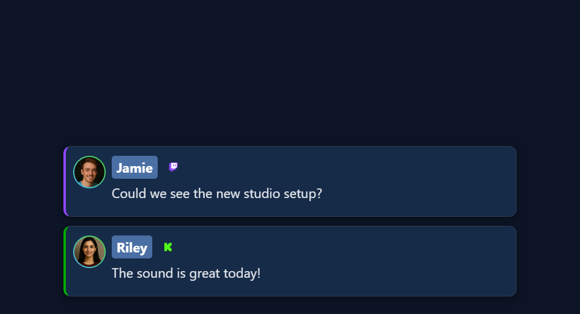

Создайте свой оверлей за 5 шагов
- Выберите оверлей который хотите изменить.
- Загрузите исходный ZIP-файл., распакуйте и скопируйте HTML-файл оверлея.
- Измените копию самостоятельно или попросите инструмент ИИ.
- Откройте копию в OBS с настройками сессии SSN, добавленными к адресу.
- Проверьте с настоящим триггером оверлея.
Выберите оверлей для изменения
Можно менять цвета, шрифты, компоновку, графику и движение оверлея. Страница HTML-файл — сама страница. Файл URL-адрес OBS указывает на неё и добавляет настройки сессии и отображения.


Каждый тип оверлея слушает разные данные. Страница чата, выделенного сообщения и опроса используют разные входные данные. Откройте руководство по дизайну своего типа:
| Руководство по проектированию | Стартовые файлы | Что движет этим |
|---|---|---|
| Чат и док | sampleoverlay.html, dock.html, themes/* | Каждое захваченное сообщение чата |
| Выбранные сообщения | featured.html, samplefeatured.html, themes/featured-styles/* | Выбранные сообщения и команды очистки |
| Оповещения и ленты событий | multi-alerts.html, events.html, themes/events/index.html | Соответствующие события/строки платного чата |
| Графические опросы | poll.html | Голоса плюс настройки опроса хоста |
| Баночки и ворота для наконечников | tipjar.html | Настроенная метрика поддержки/количества/ажиотажа |
| Счетчики и рейтинги | hype.html, meta.html, leaderboard.html, scoreboard.html | Подсчеты, метаданные, активность или снимки точек. |
| Списки ожидания и розыгрыши очередей | waitlist.html | Очередь хоста и состояние победителя |
| Витрины с подарками | giveaway.html, giveaway-obs-entries.html | Управляемый фид бесплатных объявлений или устаревший фид записей. |
| Таймеры | timer.html | Состояние таймера и элементы управления |
| Тикеры | ticker.html | Настроенное содержимое тикера |
| Облака слов и карты | wordcloud.html, map.html | Соответствующие слова или записи о местоположении. |
| Реакции и эффекты СМИ | reactions.html, emotes.html, content.html, gif.html, confetti.html, stickers.html, actions.html | Триггер для конкретного медиа/события/действия на странице. |
| Титры | credits.html | Контроль количества участников и кредитов |
| Музыка и AI-дисплеи | spotify-overlay.html, cohost-overlay.html, bot.html, chatbot.html | Обновления текущего воспроизведения или ботов/соведущих |
| Изделия и доски | monetization.html, commerce-board.html, shop_the_stream.html | Состояние совместной торговли |
| Игры и награды | games/*, games/templates/*, games.html, battle.html | Чат, подарки и команды, специфичные для игры. |
| Сгенерированные наложения ИИ | aioverlay.html, aievent-overlay.html | Сохраненные проекты и настроенный маршрут событий. |
Нужно готовое решение? Попробуйте Галерея оверлеев или Галерея шаблонов. Хотите перенести оформление чата StreamElements или Streamlabs? Следуйте руководство по импорту. У такого экспорта свои шаги настройки.
Загрузите файлы
- Скачать исходники beta в ZIP. Или откройте бета-репозиторий и выберите Код → Скачать ZIP.
- Распакуйте в постоянную папку, например
C:\SSN\social_stream-beta\. Не редактируйте внутри ZIP. Переустанавливать SSN не нужно. - Найдите файл оверлея (см. таблицу выше). Создайте копию рядом с оригиналом, например
poll.html→my-poll.html. Для темы вродеthemes/featured-styles/featured-modern.html, держите копию в той же папке. - Откройте копию в текстовом редакторе или редакторе кода. Сохраните как
.html, не.html.txt.
Устройство папки и работа путей
social_stream-beta/
poll.html
my-poll.html
currency.js
js/
libs/
shared/
thirdparty/
media/
sources/images/
themes/
featured-styles/
featured-modern.html
my-featured.html
docs/
event-reference.htmlПуть вроде ../../shared/utils/chatHtml.js задаётся относительно загружающей его страницы. Перемещение страницы в корень ломает путь. Скопируйте графику и шрифты в папку и используйте относительные пути. Изменённая копия не получает будущие исправления SSN автоматически.
Сохраните ссылку сессии
Запустите SSN, подключите источник и проверьте исходный оверлей. Затем скопируйте полную ссылку из инструмента SSN для этого оверлея.
https://socialstream.ninja/poll.html?session=YOUR_SESSION&password=YOUR_PASSWORD&server2Значение после session= — ваша сессия SSN. Это не канал YouTube, имя Twitch, имя файла или название опроса. SSN и страница должны использовать одну сессию и пароль. Оставьте SSN запущенным: оверлеи лишь получают данные, а не захватывают чат сами.
| Правило | Почему |
|---|---|
? начинает настройки, & соединяет остальное | Копируйте, не перепечатывайте. Внутри атрибута HTML пишите &. В браузере или поле URL OBS используйте обычный &. |
| Сохраните настройки сервера | server, server2, server3, локальные конечные точки, метки и версии различаются между страницами. Не добавляйте параметр сервера лишь потому, что его использует другой оверлей. |
Сохраните всё после # | Это может быть важно. Например, AI Event Overlay использует приватный #aieventauth=... . |
| Используйте заглушки при публикации | Не включайте настоящую сессию, пароль и приватные токены в скриншоты, репозитории и промпты ИИ. |
Если копия пуста, сначала проверьте исходную ссылку. Одни страницы запрашивают недостающие настройки, другие скрываются или перенаправляют. Правильная сессия в ссылке избавляет от догадок.
Откройте файл в OBS
Откройте изменённый файл прямо с компьютера. Сервер не нужен.
- Перетащите копию HTML в Chrome или Edge. Скопируйте адрес. Он начинается с
file:///. - Из рабочей ссылки оверлея SSN скопируйте всё начиная с
?и далее. Вставьте это в конец адреса файла. Так сохранятся сессия, пароль, настройки и любые#. - Откройте полученный адрес в браузере для проверки.
- В OBS добавьте Источник «Браузер». Оставьте Локальный файл выключенным. Вставьте полный адрес в URL и задайте ширину и высоту.
Пример: эта ссылка SSN…
https://socialstream.ninja/poll.html?session=YOUR_SESSION&password=YOUR_PASSWORD&server2…становится таким для скачанной копии опроса в Windows:
file:///C:/SSN/social_stream-beta/my-poll.html?session=YOUR_SESSION&password=YOUR_PASSWORD&server2В macOS начинается с file:///Users/..., в Linux обычно file:///home/.... Копирование из браузера правильно обрабатывает пробелы и слеши.
| Полезно знать | Подробности |
|---|---|
| Это настраивается один раз | OBS сохраняет адрес. Не перемещайте папку и оставляйте SSN и источник чата запущенными. |
| Сохранили изменение? | Нажмите Обновить кэш текущей страницы в свойствах источника. |
| Зачем оставлять локальный файл неотмеченным? | Поле URL позволяет добавить ?session=.... Выбор через «Локальный файл» не добавляет эти настройки. |
Необязательно: используйте флажок «Локальный файл» с помощью панели запуска.
Диалог выбора файла OBS выбирает файл, но не добавляет настройки. Небольшая страница-запускатель может открыть изменённую страницу с настройками:
- Сохраните код ниже как
launch-my-poll.htmlрядом сmy-poll.html. - Замените ссылку-заглушку полной скопированной ссылкой SSN. Измените
./my-poll.htmlна имя своего файла. Оставьте ссылку в кавычках с обычным&символы. - Дважды щёлкните запускатель для проверки. В OBS включите Локальный файл и выберите пусковая установка. Он перенаправляет в оверлей с настройками и токеном
#.
<!DOCTYPE html>
<html lang="en">
<meta charset="utf-8">
<title>My local overlay launcher</title>
<p>Opening the local overlay...</p>
<script>
var copiedLink = new URL("https://socialstream.ninja/poll.html?session=YOUR_SESSION");
var localPage = new URL("./my-poll.html", window.location.href);
localPage.search = copiedLink.search;
localPage.hash = copiedLink.hash;
window.location.replace(localPage.href);
</script>
</html>Для темы в подпапке положите запускатель рядом с копией темы. Храните его в тайне: он содержит ссылку подключения. Самодостаточный экспорт со встроенными настройками использует собственные инструкции.
OBS объясняет режимы файла/URL, размеры, пользовательский CSS и обновление в Ссылка на исходный код браузера.
Изменить дизайн самостоятельно или с ИИ
| Я хочу… | Что сделать |
|---|---|
| Изменить только CSS | Сохраните размещённую ссылку и используйте в OBS Собственный CSS . Это влияет только на этот источник OBS, не на обычный браузер. |
| Изменить оформление моей HTML-копии | Добавьте стили после существующих или подключите после них локальный файл стилей. |
Используйте &css= или &b64css= | Это поддерживают лишь некоторые страницы. poll.html, например, не читает ни один из них. Сначала проверьте код страницы. |
| Изменить структуру HTML | Сохраните ID и классы, используемые скриптами. Если скрипт пересоздаёт элемент при каждом обновлении, разместите постоянную графику вне него или добавьте в функцию отрисовки. |
| Изменить общий файл стилей или скрипт | Скопируйте его и укажите копию на своей странице, чтобы менялся только ваш дизайн. |
Подготовьте логотип, файлы шрифтов, фирменные цвета, размер холста и визуальный образец. Веб-страница обычно не может загружать шрифты или изображения с диска другого компьютера.
Подсказка AI
Используйте промпт для нужного типа из руководства по дизайну или начните с этого. Передайте ИИ копию файла и загружаемые стили и скрипты.
Customize [copied overlay filename] to match [reference/design].
Canvas: [width x height]. Placement: [position]. Colors/fonts: [details].
Use the existing page and its supporting files, rather than replacing its
connection and event logic. Read docs/event-reference.html and the relevant
overlay design guide. Preserve query parameters, session/password, URL
fragments, bridge labels, transport channels, settings, and controls.
Use CSS first. Keep relative paths and package all executable dependencies
locally. Use classic scripts compatible with Chrome 80.
Keep operator controls, private links, and credentials off the audience view.
Treat all incoming messages, names, labels, donations, and metadata as untrusted.
Prevent HTML/JavaScript injection in every renderer you change. Use textContent
for plain fields and for chatmessage when textonly is true. For HTML-mode
chatmessage, keep supported emotes/formatting through the packaged
SocialStreamChatHTML.sanitize helper (libs/objects.js loaded first).
Do not concatenate raw input into innerHTML, attributes, CSS, or JavaScript.
Validate media/link URLs with the page's existing URL policy and assign DOM
properties; do not enable javascript: URLs or executable embedded content.
Never eval incoming data or treat a viewer message as an AI instruction.
Keep source checks, connection handling, and existing sanitizers.
Test plain text, allowed emotes, quotes, angle brackets, and an HTML injection
probe in an isolated preview; verify the probe cannot execute.
Make the edited overlay work directly from disk using a file:/// URL,
without requiring a local web server. Return the edited files and assets,
file URL and OBS setup steps, and tests
for this overlay's real trigger. Use session placeholders in shared examples.
Explain any behavior changes separately from the design edits.Не позволяйте входящему чату становиться кодом
Имена, сообщения, заголовки, суммы и ссылки поступают от зрителей и внешних сервисов. Считайте их текстом, никогда кодом. Очищайте там, где отрисовка помещает их на страницу.
| Поле | Как показать |
|---|---|
chatmessage с textonly true | Обычный текст (textContent). |
chatmessage иначе | Может содержать эмоуты и разрешённое форматирование. Используйте встроенный санитайзер. |
| Имена, суммы, заголовки и другие обычные поля | Обычный текст (textContent). |
chatimg, contentimg, ссылки | URL, не HTML. Проверьте их по существующим правилам страницы для медиа и ссылок, затем задайте свойства DOM. |
<!-- Example for a copied page at the repository root. -->
<script src="./libs/objects.js"></script>
<script src="./shared/utils/chatHtml.js"></script>
<script>
function renderChatBody(element, data) {
var message = String(data.chatmessage == null ? "" : data.chatmessage);
if (data.textonly) {
element.textContent = message;
} else {
element.innerHTML = SocialStreamChatHTML.sanitize(message);
}
}
// Names, amounts, titles, and other plain fields use textContent:
// nameElement.textContent = String(data.chatname || "");
</script>- Если на странице уже есть санитайзер, сохраните его. Не добавляйте второй.
- Для файлов в подпапках исправьте пути к скриптам.
- Не вставляйте необработанные имена в строки атрибутов или цвета в разметку стилей. Проверяйте значения стилей перед установкой каждого свойства отдельно.
- Даже очищенный HTML небезопасно выполнять как JavaScript или использовать как инструкцию для ИИ.
Подробнее: Руководство OWASP по безопасным приёмникам данных и очистке HTML.
Как безопасно проверить отрисовку
Запускайте их в приватном локальном предпросмотре, не в публичном чате.
- Используйте имя вроде
Guest <b>One</b>. Скобки должны отобразиться как текст. - Отправить
chatmessage: "<b>Hello</b>"сtextonly: true, затем false. В одном случае теги должны отобразиться как текст, в другом — как жирный текст. - Проверьте, что поддерживаемый эмоут и сообщение только с изображением по-прежнему работают.
- Попросите ИИ проверить безвредный тест, например
<img src=x onerror="window.__ssnInjectionProbe=1">. Он не должен выполняться, устанавливать маркер или оставлять атрибуты событий. Также проверьте ссылку со скриптовой схемой URL.
Успешная проверка охватывает только проверенные пути. Сосредоточьтесь на функциях отрисовки и полях, изменённых вашим дизайном.
Проверяйте по одной части
| Проверка | Как |
|---|---|
| Компоновка | Используйте режим предпросмотра/демо страницы, если он есть, или вымышленные локальные примеры. Проверьте длинные имена и сообщения, отсутствующие аватары, пустые данные и ожидаемое число строк. |
| Доставка SSN | Оставьте SSN включённым и используйте Создать тестовое сообщение с той же сессией. Обычному режиму API расширения нужен удалённое управление расширением через API включённым. Используйте тестовую конфигурацию: тестовые сообщения могут запускать автоматизации. |
| Настоящий триггер | Выведите сообщение из Dock для карточки, проголосуйте в опросе, выберите победителя розыгрыша, измените бегущую строку или запустите таймер. Обычный чат проверяет не всё. |
| Реальный захват | Проверьте, что настоящее сообщение или событие приходит и в оригинал, и в копию. Искусственное событие подтверждает лишь работу отображения. |
| OBS | Проверьте итоговый размер, прозрачность, анимации, звук, шрифты и слои. Попробуйте показ/скрытие, очистку/сброс и обновление. OBS и браузер не делятся входами и сохранёнными данными. |
demo или preview из ссылки, прежде чем ожидать живые данные.Файлы, которые нужно передать ИИ
Передайте ИИ сам файл оверлея, загружаемые CSS/JS и эти файлы. Одна лишь справка событий не объясняет управление опросом или код компоновки каждого оверлея.
| Файл | Для чего это |
|---|---|
docs/event-reference.html | Официальные поля, именованные события, метаданные, медиа и суммы пожертвований. |
docs/customoverlays.md | Собственные получатели и примеры соединений. |
| Совместимость событий и уведомлений | Какие события и поля отправляет каждый источник. |
Руководство по тестовому сообщению и createtestmessage.html | Примеры данных и режимы доставки. |
libs/objects.js и shared/utils/chatHtml.js | Встроенный санитайзер для отображения. |
shared/utils/chatBadges.js и shared/utils/contentImage.js | Существующая обработка значков и изображений. |
js/transport-dedupe.js, js/local-server-url.js, shared/overlay-control-transport.js | Существующая поддержка соединений, если страница загружает эти файлы. |
currency.js | Оставьте hasDonation для отображения и используйте допустимое числовое значение USD donoValue, включая ноль. |
| Event Flow и Команды и API | Используйте существующие элементы управления, если дизайну нужен триггер. |
Устранение неполадок
| Проблема | Что попробовать |
|---|---|
| Файл не найден | Снова перетащите HTML в браузер и скопируйте адрес. Убедитесь, что имя заканчивается на .html, а не .html.txt. |
| Отсутствует шрифт, шрифт или изображение. | Сохраните распакованную папку как есть, с копией рядом с оригиналом. Убедитесь, что добавленные изображения и шрифты находятся там, где страница их ожидает. |
| Пустой экран или «ожидание» | Проверьте сессию, пароль, полные ? и # части, работу SSN, включение функции и поступление правильных данных. Сравните с исходной ссылкой SSN. |
| В OBS выглядит иначе, чем в браузере | Проверьте ширину/высоту, старый пользовательский CSS, шрифты, кеш и хранилище браузера. Обновите после сохранения. |
| Логотип исчезает при обновлении | Скрипт может пересоздавать контейнер. Разместите постоянные украшения вне него или измените шаблон отрисовки. |
| Данные сбрасываются или действия выполняются дважды | Проверьте настройки обновления и выгрузки, дубли оверлея или управления, а также обработку дублей и состояния самой страницей. |
Особый случай: страницы, которые считывают отдельные файлы данных.
Карта загружает локальные JSON-файлы через fetch(), что браузеры могут блокировать при открытии с диска. Для простой смены оформления карты используйте размещённую ссылку и собственный CSS в OBS. Для изменённой копии попросите ИИ встроить данные карты в страницу, чтобы она открывалась с диска. Хостинг — расширенный вариант для страниц, которым он действительно нужен, а не обычный шаг.
Сначала исправьте наименьшую подтверждённую проблему. Смена оформления не должна требовать изменений скриптов захвата или новых полей событий. Публикуя форк, включите ресурсы, но исключите приватные запускатели.